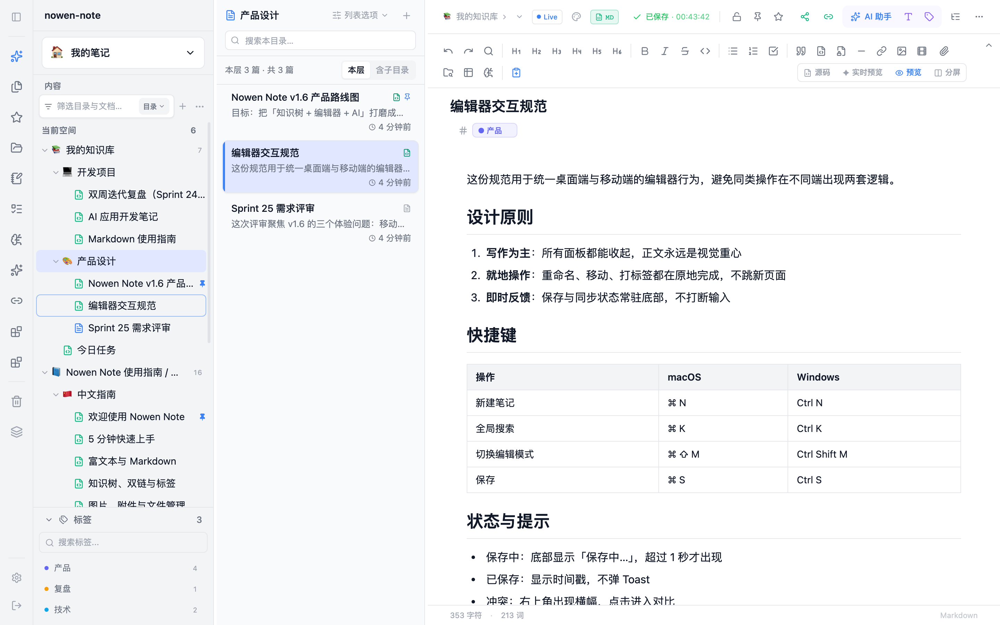

支持 DOCX、PPTX、XLSX 导入导出，可以直接拖入目录树。
弄文笔记 · 开源自托管
Nowen Note 弄文笔记
写笔记、整理资料，也可以在 NAS 上自托管。v1.6.2 已正式发布，新增 Word、PPT 和 Excel 编辑能力、文件批量操作及自定义时区，并改善桌面同步与导入。

v1.6.2 · 正式发布
Office 编辑、文件整理和桌面同步
改善 NAS 弱网同步和备份恢复，支持导入本地文件夹，修复 Obsidian 相对路径附件导入。
文件管理和图床支持跨页多选、批量移动、打标签及移入回收站。
可跟随系统或随账号同步所选时区，用于日记筛选、任务提醒和分享有效期。
升级前备份数据库、附件与配置。GitHub 发布的 macOS 包未签名或公证，Windows 直装 EXE 未签名。
一个地方，管理笔记、知识与待办
自由记录，使用知识树分类与管理内容。
配置自己选择的 AI 服务，辅助整理和查找信息。
数据放在可控制的设备上，支持备份与恢复。
Web、Windows、macOS、Linux 与 Android；服务端同步需要主动配置。
准备开始？
新用户建议先在下载中心选择对应设备。桌面端可直接本地使用；多端共同访问需要连接相同服务器与账号。
选择安装方式 → 5 分钟入门 →